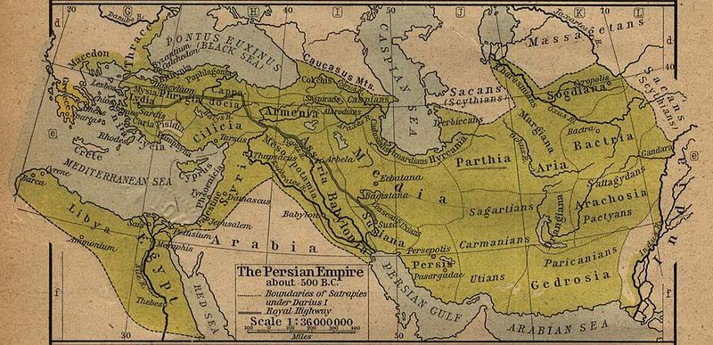
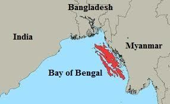

They ask you concerning Dhul-Qarnayn. Say, "I will rehearse to you something of his story." Verily, We established his power on earth, and We gave him the ways and the means to all ends.
তারা আপনাকে যুলকারনাইন সম্পর্কে জিজ্ঞাসা করে। বলুন, "আমি আপনাকে তার গল্পের কিছু রিহার্সাল করব।" সত্যই, আমরা পৃথিবীতে তার শক্তিকে প্রতিষ্ঠিত করেছি এবং তাকে সমস্ত প্রান্তের পথ ও উপায় দিয়েছি।
Gog and Magog are descendants of Noah from the lineage of Japheth:
ইয়াফেথের বংশ থেকে গোগ এবং মাগোগ নূহের বংশধর:
―Meshech is the grandson of Noah born after the Great Flood and the sixth son of Japheth along with Gomer, Magog, Madai, Javan, Tubal, and Tiras.‖ [1 Chronicles 1:4-5, Genesis 10:1-2, Holy Bible]
-মেশেক হলেন মহাপ্লাবনের পরে জন্মগ্রহণকারী নোহের নাতি এবং গোমের, মাগোগ, মাদাই, জাভান, তুবল এবং তিরাসের সাথে জাফেথের ষষ্ঠ পুত্র।
It is likely that the descendants of Meshech, Gomer, Magog, Madai, Javan, Tubal, and Tiras inhabit the region spanning Russia, Mongolia, Manchuria, Korea, and Japan. These races are fierce fighters. Moscow is named after Meshech.
সম্ভবত মেশেক, গোমার, মাগোগ, মাদাই, জাভান, তুবাল এবং তিরাসের বংশধররা রাশিয়া, মঙ্গোলিয়া, মাঞ্চুরিয়া, কোরিয়া এবং জাপান বিস্তৃত অঞ্চলে বসবাস করে। এই ঘোড়দৌড় প্রচণ্ড যোদ্ধা। মস্কোর নামকরণ করা হয়েছে মেশেকের নামে।
―The word of Yahweh came to me in these terms, "Son of man, turn towards Gog of the country of Magog, the chief prince of Meshech and Tubal and prophesy against him. Say to him: Hear the word of Yahweh: I come to strike you, Gog, chief prince of Meshech and Tubal. I will turn you round, fix hooks in your jaws and bring you out, you and your entire army, horses and riders all perfectly equipped, a great army, all with shields and bucklers and brandishing swords. Persia, Cush and Put are with them, all with buckler and helmet. [Ezekiel 38 (1–5), Holy Bible]
- এই শর্তে আমার কাছে সদাপ্রভুর বাক্য এসেছিল, "হে মনুষ্যসন্তান, মাগোগ দেশের গোগ, মেশেক ও তুবলের প্রধান রাজপুত্রের দিকে ফিরে যাও এবং তার বিরুদ্ধে ভবিষ্যদ্বাণী কর; তাকে বল: প্রভুর বাক্য শোন: আমি তোমাকে আঘাত করতে এসেছি, মেশেক ও তুবলের প্রধান রাজপুত্র গোগ, আমি তোমাকে ঘায়েল করব, তোমাকে ঘুরিয়ে ফিরিয়ে আনব এবং তোমাকে ঘায়েল করব। সৈন্য, ঘোড়া এবং আরোহীরা সবই নিখুঁতভাবে সজ্জিত, একটি মহান সেনাবাহিনী, তাদের সাথে রয়েছে ঢাল এবং বকলার এবং পার্শিয়া, কুশ এবং পুট, সমস্ত বকলার এবং শিরস্ত্রাণ সহ [ইজেকিয়েল 38 (1-5), পবিত্র বাইবেল]
Some of their descendants, such as the Russians and Turkic peoples, have embraced the religion of Abraham and will not join the forces of Gog and Magog in the war against Jesus Christ. Those living in the east of Altai, Tien Shan, Pamir, and Himalayan mountain ranges will constitute the forces of Gog and Magog, causing devastation in the end-time war, as indicated in the Quran—discussed subsequently in this topic. The Wall of Dhul-Qarnayn plays a vital role in the matter. We will identify this Wall and discuss its implications. The discussion will progress as under: 1. Who Dhul-Qarnayn was? 2. Area of Gog Magog 3. What Dhul-Qarnayn was actually doing? 4. Identification of the Wall 5. Implication of the Wall 6. Break Out of Gog Magog
তাদের কিছু বংশধর, যেমন রাশিয়ান এবং তুর্কি জনগণ, আব্রাহামের ধর্ম গ্রহণ করেছে এবং যীশু খ্রীষ্টের বিরুদ্ধে যুদ্ধে গগ এবং মাগোগের বাহিনীর সাথে যোগ দেবে না। আলতাই, তিয়েন শান, পামির এবং হিমালয় পর্বতমালার পূর্বে বসবাসকারীরা গগ এবং মাগোগের বাহিনী গঠন করবে, যা শেষ সময়ের যুদ্ধে ধ্বংসযজ্ঞ ঘটাবে, যেমনটি কুরআনে নির্দেশিত হয়েছে-পরবর্তীতে এই বিষয়ে আলোচনা করা হয়েছে। যুল-কারনাইনের প্রাচীর এক্ষেত্রে গুরুত্বপূর্ণ ভূমিকা পালন করে। আমরা এই প্রাচীর চিহ্নিত করব এবং এর প্রভাব নিয়ে আলোচনা করব। আলোচনাটি নিম্নরূপ হবে: 1. যুলকারনাইন কে ছিলেন? 2. ইয়াজুজ মাগোগের এলাকা 3. যুল-কারনাইন আসলে কী করছিল? 4. প্রাচীর সনাক্তকরণ 5. প্রাচীরের অন্তর্নিহিততা 6. ইয়াজুজ মাগোগ থেকে বেরিয়ে আসা
1. Who Dhul-Qarnayn was?
1. যুল-কারনাইন কে ছিলেন?
"Dhul-Qarnayn," mentioned in the verses under discussion, means "Two-Horned." This pseudonym is also found in the prophecies of the Holy Bible, which offer clues about his identity. ―I raised my eyes and saw a ram standing before the river. It had two long horns, but one was longer than the other. I saw the ram charging westward, northward, and southward. No animal could resist it; none could escape its power. It did as it pleased and so became great. As I was thinking, a he-goat came from the west, as if flying above the entire earth without touching the ground; it had a great horn between its eyes. It approached the ram with the two horns which I had seen by the river, and it ran towards the ram with all the fury of its strength. I saw how it reached the ram and directed itself against it; it charged the ram and broke its two horns, and the ram was unable to resist. It cast it down to the ground and crushed it. No one could free the ram from its power. [Daniel 8: (3-7), Holy Bible]
আলোচ্য আয়াতে উল্লিখিত "যুল-কারনাইন", মানে "দুই শিংওয়ালা"। এই ছদ্মনামটি পবিত্র বাইবেলের ভবিষ্যদ্বাণীতেও পাওয়া যায়, যা তার পরিচয় সম্পর্কে ইঙ্গিত দেয়। - আমি চোখ তুলে দেখলাম নদীর সামনে একটা মেষ দাঁড়িয়ে আছে। এর দুটি লম্বা শিং ছিল, কিন্তু একটি অন্যটির চেয়ে লম্বা ছিল। আমি রামটিকে পশ্চিম দিকে, উত্তর দিকে এবং দক্ষিণ দিকে চার্জ করতে দেখেছি৷ কোন প্রাণী তা প্রতিরোধ করতে পারেনি; কেউ তার ক্ষমতা এড়াতে পারেনি। এটি খুশি হিসাবে তাই করেছে এবং তাই মহান হয়ে ওঠে. আমি যখন ভাবছিলাম, তখন পশ্চিম দিক থেকে একটা ছাগল এসেছে, যেন মাটি স্পর্শ না করেই পুরো পৃথিবীর ওপর দিয়ে উড়ে যাচ্ছে; এর চোখের মধ্যে একটি বড় শিং ছিল। আমি নদীর ধারে যে দুটি শিং দেখেছিলাম তা দিয়ে তা ভেড়ার কাছে এসে তার সমস্ত ক্রোধ নিয়ে মেষের দিকে ছুটে গেল। আমি দেখলাম কিভাবে এটা মেষের কাছে পৌঁছেছে এবং তার বিরুদ্ধে নিজেকে নির্দেশ করেছে; সে মেষটিকে চার্জ করে তার দুটি শিং ভেঙ্গে ফেলল এবং মেষটি প্রতিরোধ করতে পারল না। এটা মাটিতে নিক্ষেপ এবং এটি চূর্ণ. কেউই মেষকে তার শক্তি থেকে মুক্ত করতে পারেনি। [ড্যানিয়েল 8: (3-7), পবিত্র বাইবেল]
In the Holy Bible, the prophecies are expressed through symbols to ensure that they are not clearly understood until they come to pass. A beast represents an empire or emperor, while the horns symbolize the races within the empire. In the above verses, the 'Two-Horned Ram' represents the Medo-Persian Empire, because it comprised two races: Arabs and Persians. The 'Single-Horned He-Goat' represents Alexander, because he had only one race, Greeks, under him. Daniel lived about two hundred years before Alexander when the prophecy was revealed to him. As the prophecy was fulfilled, there remained no doubt that the "Single-Horned He-Goat" symbolized Alexander, who destroyed the "Two-Horned Ram," representing the Medo-Persian Empire. The Quran and the Holy Bible originate from the same source. Therefore, in the Quran, Dhul-Qarnayn (Two-Horned) should also refer to a Medo-Persian emperor. But, the Medo-Persian Emperors ruled the world for hundreds of years. Which Emperor is the Quran referring to? To answer this, the verses under discussion indicate that Dhul-Qarnayn was an extremely pious individual. If he were not, Allah would not have instructed him directly, as stated in the verses: "We said: "O Dhul- Qarnayn! Either that you punish them, or that you take in goodness."" According to Hadith as well, Dhul-Qarnayn was a pious person. And, we find in the Hebrew Bible that the Medo-Persian Emperor Cyrus the Great is referred to as a 'Messiah' and as 'My shepherd':
পবিত্র বাইবেলে, ভবিষ্যদ্বাণীগুলিকে চিহ্নের মাধ্যমে প্রকাশ করা হয়েছে যাতে সেগুলি বাস্তবায়িত না হওয়া পর্যন্ত স্পষ্টভাবে বোঝা না যায়। একটি জন্তু একটি সাম্রাজ্য বা সম্রাটকে প্রতিনিধিত্ব করে, যখন শিংগুলি সাম্রাজ্যের মধ্যে জাতিগুলির প্রতীক। উপরের আয়াতগুলিতে, 'দুই শিংওয়ালা রাম' মেডো-পার্সিয়ান সাম্রাজ্যের প্রতিনিধিত্ব করে, কারণ এটি দুটি জাতি নিয়ে গঠিত: আরব এবং পারস্য। 'সিঙ্গল-হর্নড হি-গোট' আলেকজান্ডারের প্রতিনিধিত্ব করে, কারণ তার অধীনে কেবল একটি জাতি ছিল, গ্রীক। ড্যানিয়েল আলেকজান্ডারের প্রায় দুইশ বছর আগে বেঁচে ছিলেন যখন তার কাছে ভবিষ্যদ্বাণী প্রকাশিত হয়েছিল। ভবিষ্যদ্বাণীটি পূর্ণ হওয়ার সাথে সাথে কোন সন্দেহ নেই যে "একক-শিংযুক্ত তিনি-ছাগল" আলেকজান্ডারের প্রতীক, যিনি মেডো-পারস্য সাম্রাজ্যের প্রতিনিধিত্বকারী "দুই-শিংযুক্ত রাম" ধ্বংস করেছিলেন। কুরআন এবং পবিত্র বাইবেল একই উৎস থেকে উদ্ভূত। অতএব, কুরআনে, যুল-কারনাইন (দুই শিংওয়ালা) বলতে একজন মেদো-পারস্য সম্রাটকেও উল্লেখ করা উচিত। কিন্তু, মেদো-পারস্য সম্রাটরা শত শত বছর ধরে বিশ্ব শাসন করেছে। কুরআন কোন সম্রাটের কথা বলছে? এর উত্তরে আলোচ্য আয়াতগুলো ইঙ্গিত করে যে, যুল-কারনাইন একজন অত্যন্ত ধার্মিক ব্যক্তি ছিলেন। তিনি না থাকলে আল্লাহ তাকে সরাসরি নির্দেশ দিতেন না, যেমনটি আয়াতে বলা হয়েছে: "আমরা বললাম: "হে যুল-কারনাইন! হয় তুমি তাদের শাস্তি দাও, নয়তো কল্যাণ গ্রহণ কর।" হাদিস অনুসারেও, যুল-কারনাইন একজন ধার্মিক ব্যক্তি ছিলেন। এবং, আমরা হিব্রু বাইবেলে দেখতে পাই যে মেডো-পার্সিয়ান সম্রাট সাইরাস দ্য গ্রেটকে 'মশীহ' এবং 'আমার মেষপালক' হিসাবে উল্লেখ করা হয়েছে:
―I call on Cyrus, "My shepherd!" and he goes to fulfill my will. I say to Jerusalem, "Be rebuilt!" and see: the cornerstone is laid‖ [Isaiah 44:28, Holy Bible]
- আমি সাইরাসকে ডাকি, "আমার রাখাল!" এবং সে আমার ইচ্ছা পূরণ করতে যায়। আমি জেরুজালেমকে বলি, "পুনর্নির্মিত হও!" এবং দেখুন: ভিত্তিপ্রস্তর স্থাপন করা হয়েছে” [ইশাইয়া 44:28, পবিত্র বাইবেল]
―Thus saith the LORD to his anointed (Messiah), to Cyrus, whose right hand I have holden, to subdue nations before him; and I will loose the loins of kings, to open before him the two leaved gates; and the gates shall not be shut;‖ [Isaiah 45:1, Holy Bible (KJV)] Therefore, it is most likely that the Medo-Persian Emperor Cyrus the Great (600 BCE–530 BCE) is referred to as Dhul-Qarnayn (Two Horned) in the verses under discussion. He founded one of the largest empires in history. This Chapter (Surah) starts with Jesus, subsequently it talks about Ashab-e-Kahf, then it talks about Khidr, and finally it talks about Cyrus the Great. These were people of the same line. We call this kind of people Sufi. The verses under discussion say, ―We gave him the ways and the means to all ends‖. Cyrus established a vast empire that extended into Africa and Europe. He implemented the most efficient postal system of ancient times, where mounted couriers could reach the most remote areas in just fifteen days. In this system, a letter or parcel could travel 200 miles per day. Royal inspectors would tour the empire and report local conditions to the Emperor.
- এইভাবে প্রভু তাঁর অভিষিক্ত (মশীহ) সাইরাসকে বলেছেন, যার ডান হাত আমি ধরে রেখেছি, তার সামনে জাতিগুলিকে বশীভূত করার জন্য; এবং আমি রাজাদের কোমর খুলে দেব, তার সামনে দুটি ছেড়ে যাওয়া দরজা খুলে দেব। এবং গেট বন্ধ করা হবে না;'' [ইশাইয়া 45:1, পবিত্র বাইবেল (KJV)] অতএব, সম্ভবত আলোচনার অধীন আয়াতগুলিতে মেদো-পারস্য সম্রাট সাইরাস দ্য গ্রেট (600 BCE-530 BCE) কে ধুল-কারনাইন (দুই শিংওয়ালা) হিসাবে উল্লেখ করা হয়েছে। তিনি ইতিহাসের বৃহত্তম সাম্রাজ্যগুলির একটি প্রতিষ্ঠা করেছিলেন। এই অধ্যায়টি (সূরা) ঈসা (আঃ) দিয়ে শুরু হয়েছে, পরবর্তীতে এটি আসহাব-ই-কাহফ সম্পর্কে কথা বলেছে, তারপরে এটি খিদর সম্পর্কে কথা বলেছে এবং শেষ পর্যন্ত এটি সাইরাস দ্য গ্রেট সম্পর্কে কথা বলেছে। এরা একই ধারার মানুষ ছিলেন। এই ধরনের লোকদের আমরা সুফি বলি। আলোচ্য আয়াতে বলা হয়েছে, ‘আমরা তাকে সর্বপ্রকার উপায় ও উপায় দিয়েছি’। সাইরাস একটি বিশাল সাম্রাজ্য প্রতিষ্ঠা করেছিলেন যা আফ্রিকা ও ইউরোপে বিস্তৃত ছিল। তিনি প্রাচীনকালের সবচেয়ে দক্ষ ডাক ব্যবস্থা বাস্তবায়ন করেছিলেন, যেখানে মাউন্ট করা কুরিয়ার মাত্র পনের দিনের মধ্যে সবচেয়ে প্রত্যন্ত অঞ্চলে পৌঁছাতে পারে। এই ব্যবস্থায়, একটি চিঠি বা পার্সেল প্রতিদিন 200 মাইল ভ্রমণ করতে পারে। রাজকীয় পরিদর্শকরা সাম্রাজ্য পরিদর্শন করবেন এবং সম্রাটের কাছে স্থানীয় পরিস্থিতির রিপোর্ট করবেন।
FIGURE 18.7: Medo-Persian Empire 500 BCE At the height of its power, the empire stretched from the Pamirs to Greece and Libya. It was ruled by a series of monarchs who unified various nationalities by constructing extensive networks of roads.

চিত্র 18_7 / Figure 18_7
চিত্র 18.7: মেডো-পার্সিয়ান সাম্রাজ্য 500 BCE এর ক্ষমতার উচ্চতায়, সাম্রাজ্য পামির থেকে গ্রীস এবং লিবিয়া পর্যন্ত বিস্তৃত ছিল। এটি একশ্রেণির রাজাদের দ্বারা শাসিত হয়েছিল যারা রাস্তার বিস্তৃত নেটওয়ার্ক তৈরি করে বিভিন্ন জাতীয়তাকে একীভূত করেছিল।
চিত্র 18_7 / Figure 18_7
He followed (fa atba'a) a course (sababan) until when he reached (hatta idha balagha) the sun was in the west (maghriba i-shamsi); and he found it (wajadaha) settle (taghrubu) in eye (fi aynin) murky water (hami-atin). And he found near it a community. We said: "O Dhul- Qarnayn! Either that you punish them, or that you take in goodness."
তিনি (ফা আতবাআ) একটি পথ (সাবাবান) অনুসরণ করেছিলেন যতক্ষণ না তিনি (হাত্তা ইদা বালাঘা) পৌঁছলেন তখন সূর্য পশ্চিমে ছিল (মাগরিব ই-শামসি); এবং তিনি এটি (ওয়াজাদাহা) চোখের (ফী আইনিন) ঘোলা পানিতে (হামি-আতিন) বসিয়ে (তাগরুবু) দেখতে পেলেন। এবং তিনি এর কাছাকাছি একটি সম্প্রদায় খুঁজে পেলেন। আমরা বললামঃ হে যুল-কারনাইন! হয় তুমি তাদেরকে শাস্তি দাও, নয়তো কল্যাণ গ্রহণ কর।
2. Area of Gog Magog
2. ইয়াজুজ মাগোগের এলাকা
The moves of Dhul-Qarnayn fix three points that help make a line. The Gog Magog lives beyond the line. The points are: a. A sea beach of murky water- Point 1 b. An area of rising sun- Point 2 c. An area of the people having no common word- Point 3 We will identify the points on ground to know the God Magog and the Wall.
যুল-কারনাইনের চাল তিনটি পয়েন্ট ঠিক করে যা একটি লাইন তৈরি করতে সাহায্য করে। গগ মাগোগ লাইনের বাইরে বাস করে। পয়েন্টগুলো হল: ক. ঘোলা জলের সমুদ্র সৈকত- পয়েন্ট 1 খ. উদীয়মান সূর্যের একটি এলাকা- বিন্দু 2 গ. মানুষের একটি এলাকা যেখানে কোন সাধারণ শব্দ নেই- পয়েন্ট 3 আমরা ঈশ্বর মাগোগ এবং প্রাচীরকে জানার জন্য মাটিতে বিন্দুগুলি চিহ্নিত করব।
2a. A Sea Beach of Murky Water- Point 1
2ক. মর্কি জলের একটি সমুদ্র সৈকত- পয়েন্ট 1
Dhul-Qarnayn went to the seashore when the sun was setting in the west. He found that the sun was sinking into the murky water, as described in the verses: ―He followed (fa atba'a) a course (sababan) until when he reached (hatta idha balagha) the sun was in the west (maghriba i- shamsi); and he found it (wajadaha) settle (taghrubu) in eye (fi aynin) murky water (hami-atin).‖ Aynin' means 'eye,' but some translate it as 'spring,' which is incorrect—no one observes a sunset at a spring. Each verse of the Quran is true, so 'eye' is mentioned here to remain true. This means Dhul-Qarnayn saw the sun setting in murky water, though the sun does not actually set in the water; the Earth rotates. Dhul-Qarnayn had actually gone to a sea beach where he saw the sun appearing to set in the murky water. Some ill-informed individuals believe that Dhul- Qarnayn traveled west to reach the setting place of the sun. But, the verses do not state that he moved west. He went to seashore from where one can observe the sunset in the murky water. There is only one seashore in the whole world where this is possible: it is the seashore where the River Ganges flows into the Bay of Bengal.
সূর্য পশ্চিমে অস্ত যাওয়ার সময় যুলকারনাইন সমুদ্রতীরে গিয়েছিলেন। তিনি দেখতে পেলেন যে সূর্য ঘোলা পানিতে ডুবে যাচ্ছে, যেমন আয়াতে বর্ণিত হয়েছে: “তিনি (ফা আতবা) একটি পথ অনুসরণ করেছেন (সাবাবান) যতক্ষণ না তিনি (হাত্তা ইদা বালাঘা) পৌঁছলেন তখন সূর্য পশ্চিমে (মাগরিব ই-শামসি) ছিল; এবং তিনি এটিকে (ওয়াজাদাহা) চোখের (ফাই আইনিন) ঘোলা জলে (হামি-আতিন) বসিয়ে (তাগরবু) দেখতে পান। ‖ আইনিন' মানে 'চোখ', কিন্তু কেউ কেউ এটিকে 'বসন্ত' হিসাবে অনুবাদ করেছেন, যা ভুল - কেউ বসন্তে সূর্যাস্ত দেখেন না। কুরআনের প্রতিটি আয়াত সত্য, তাই সত্য থাকার জন্য এখানে 'চোখ' উল্লেখ করা হয়েছে। এর মানে যুল-কারনাইন ঘোলা পানিতে সূর্য অস্ত যেতে দেখেছেন, যদিও সূর্য আসলে পানিতে অস্ত যায় না; পৃথিবী ঘোরে। যুল-কারনাইন আসলে একটি সমুদ্র সৈকতে গিয়েছিলেন যেখানে তিনি ঘোলা পানিতে সূর্যকে অস্ত যেতে দেখেছিলেন। কিছু অসচেতন ব্যক্তি বিশ্বাস করেন যে, যুল-কারনাইন সূর্য অস্ত যাওয়ার জন্য পশ্চিম দিকে ভ্রমণ করেছিলেন। কিন্তু, আয়াতে উল্লেখ নেই যে তিনি পশ্চিমে চলে গেছেন। তিনি সমুদ্রতীরে গিয়েছিলেন যেখান থেকে ঘোলা জলে সূর্যাস্ত অবলোকন করা যায়। সমগ্র পৃথিবীতে একটিমাত্র সমুদ্রতট রয়েছে যেখানে এটি সম্ভব: এটি সেই সমুদ্রতীর যেখানে গঙ্গা নদী বঙ্গোপসাগরে প্রবাহিত হয়।
FIGURE 18.4: The Bay of Bengal The River Ganges is famous for its muddy waters, as vast amounts of sediment flow down from the Himalayas. This makes the waters of the northern Bay of Bengal murky, with silt spreading over 23,000 square miles (60,000 square kilometers).

চিত্র 18_4 / Figure 18_4
চিত্র 18.4: বঙ্গোপসাগর গঙ্গা নদী তার ঘোলা জলের জন্য বিখ্যাত, কারণ হিমালয় থেকে প্রচুর পরিমাণে পলি প্রবাহিত হয়। এটি 23,000 বর্গ মাইল (60,000 বর্গ কিলোমিটার) জুড়ে পলি ছড়িয়ে উত্তর বঙ্গোপসাগরের জলকে ঘোলা করে তোলে।
চিত্র 18_4 / Figure 18_4
FIGURE 18.5: Water of Ganges
চিত্র 18_5 / Figure 18_5
চিত্র 18.5: গঙ্গার জল
চিত্র 18_5 / Figure 18_5
Most likely, Dhul-Qarnayn traveled to a location between Calcutta and Chittagong, from where one can see the sunset over the murky water. Another aspect that defines the area is its people. Dhul-Qarnayn encountered a people in the region about whom it was said: "We said: "O Dhul-Qarnayn! Either that you punish them, or that you take in goodness."" This means that you may punish them, but they will not resist; instead, they will beg for their lives and flee if possible. And if they are treated with kindness, they will be useful, as the verses say: ―…or that you take in goodness…‖ This type of extremely simple and submissive people can only be found in this area. He said: "Whoever does wrong him shall we punish; then shall he be sent back to his Lord, and He will punish him with a punishment unheard-of. But whoever believes and works righteousness he shall have a goodly reward, and easy will be his task, as we order it by our Command."
খুব সম্ভবত, যুল-কারনাইন কলকাতা ও চট্টগ্রামের মধ্যবর্তী স্থানে ভ্রমণ করেছিল, যেখান থেকে ঘোলা জলের উপর সূর্যাস্ত দেখতে পাওয়া যায়। আরেকটি দিক যা এলাকাটিকে সংজ্ঞায়িত করে তা হল এর জনগণ। যুল-কারনাইন ঐ অঞ্চলে এমন এক লোকের মুখোমুখি হয়েছিল যাদের সম্পর্কে বলা হয়েছিল: "আমরা বললাম: "হে যুল-কারনাইন! হয় তুমি তাদের শাস্তি দাও, নয়তো তুমি ভালোভাবে গ্রহণ কর।" পরিবর্তে, তারা তাদের জীবনের জন্য ভিক্ষা করবে এবং সম্ভব হলে পালিয়ে যাবে। এবং যদি তাদের সাথে সদয় আচরণ করা হয়, তবে তারা দরকারী হবে, যেমন আয়াতগুলি বলে: "…অথবা যে আপনি কল্যাণ গ্রহণ করেন..." এই ধরনের অত্যন্ত সরল এবং বশ্যতাপূর্ণ মানুষ শুধুমাত্র এই এলাকায় পাওয়া যাবে। তিনি বললেন: "কেউ তাকে অন্যায় করবে আমরা তাকে শাস্তি দেব; তারপর তাকে তার পালনকর্তার কাছে ফেরত পাঠানো হবে, এবং তিনি তাকে এমন শাস্তি দেবেন যা শোনা যায় না। কিন্তু যে ব্যক্তি বিশ্বাস করে এবং সৎকাজ করে তার জন্য রয়েছে উত্তম প্রতিদান, এবং তার কাজ সহজ হবে, যেমন আমরা আমাদের আদেশ দিয়েছি।"
The above verses indicate that Dhul-Qarnayn gathered porters from this area.
উপরের আয়াতগুলো ইঙ্গিত করে যে, যুল-কারনাইন এই এলাকা থেকে দারোয়ানদের জড়ো করেছিল।
Then he followed another way until when he reached the 'place of rising sun' (matlia i-shamsi); he found it rising on a people for whom We had provided no covering protection against it (the sun). Thus, and verily We encompassed of what information with him.
তারপর তিনি অন্য পথ অনুসরণ করেন যতক্ষণ না তিনি 'উদীয়মান সূর্যের স্থানে' (মাতলিয়া ই-শামসি) পৌঁছান; তিনি এটিকে এমন এক সম্প্রদায়ের উপর উদিত দেখতে পেলেন যাদের জন্য আমি এর (সূর্য) থেকে কোন আবরণ রক্ষা করিনি। এইভাবে, এবং সত্যই আমরা তার কাছে কী তথ্য বেষ্টন করেছি।